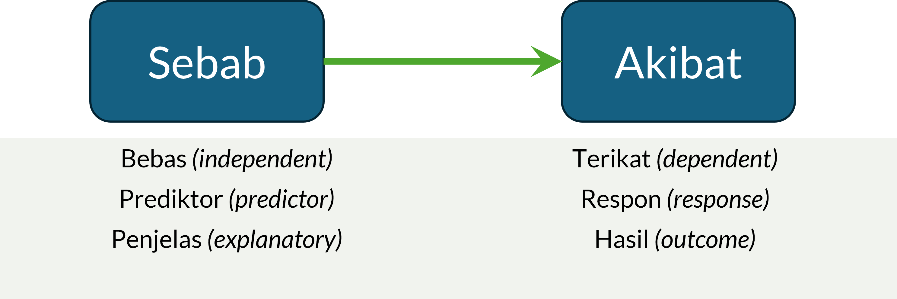
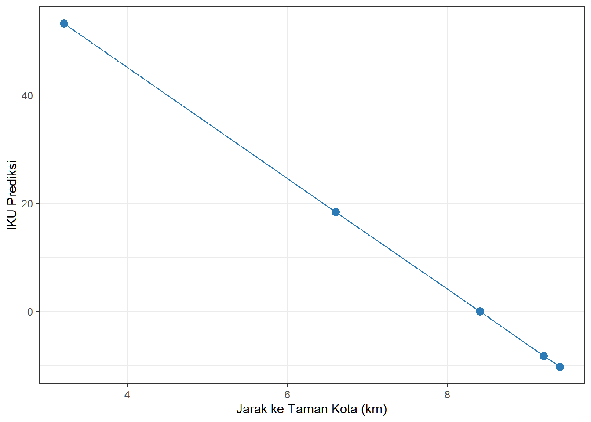
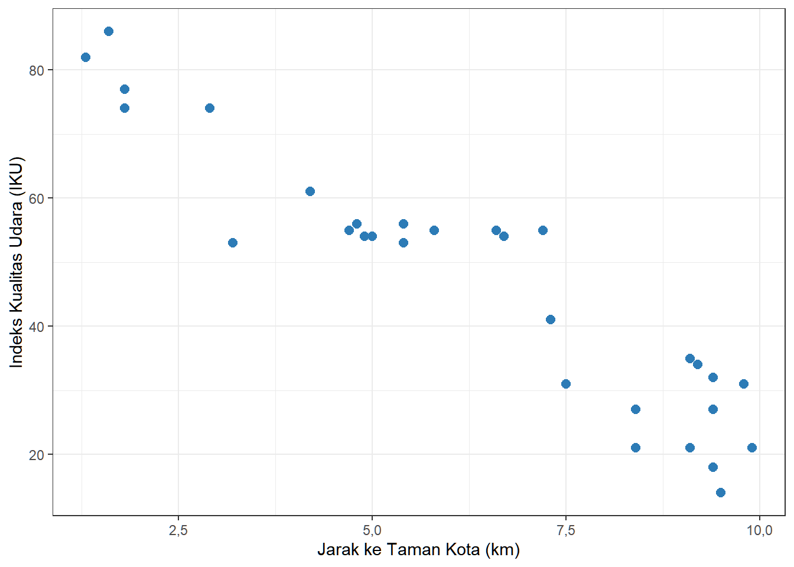
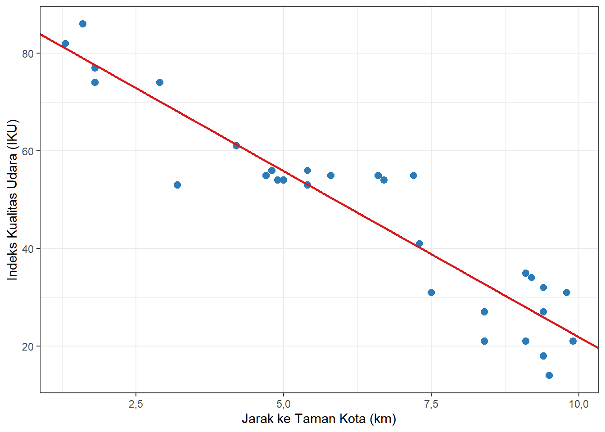

Bab 12 Kausalitas dengan Regresi Linear Sederhana
Capaian Pembelajaran
Setelah mempelajari bab ini, Anda diharapkan:
- Mampu membedakan korelasi dan kausalitas dengan tepat STP-12.1
- Mampu menguraikan hubungan antara variabel independen dengan variabel dependennya secara tepat sesuai dengan bentuk persamaan regresi linear sederhana STP-12.2
Dalam subbab 9.2.3, kita sudah mempelajari dua bentuk dalam sebuah hubungan antara dua variabel: korelasi dan kausalitas. Tiga bab sebelumnya membahas korelasi antara dua variabel. Mulai bab ini, kita akan bergeser pada pembahasan mengenai kausalitas antara dua variabel.
12.1 Apa yang Menentukan Sebuah Hubungan adalah Kausalitas?
Pada subbab 9.2.3 kita sudah membahas dasar dari perbedaan antara korelasi dan kausalitas. Di sana ditekankan bahwa “korelasi belum tentu adalah sebuah kausalitas.” Jadi, apa yang menentukan sebuah hubungan antara dua variabel adalah kausalitas?
Jawaban dari pertanyaan ini adalah kondisi prasyarat yang harus dipenuhi sebuah hubungan agar dapat dikatakan bersifat kausalitas (Ewing and Park 2020). Ada empat hal dalam kondisi prasyarat tersebut, yaitu:
- Plausibilitas Konseptual (Conceptual Plausibility). Kondisi ini menyatakan bahwa harus ada teori atau dasar konseptual yang mendukung hubungan antara variabel yang menjadi penyebab dan variabel yang menjadi akibat. Hubungan tersebut harus masuk akal secara ilmiah dan sesuai dengan kerangka teori yang relevan.
- Asosiasi Kuat (Strong Association). Hubungan pengaruh antarvariabel harus menunjukkan korelasi yang cukup kuat dan signifikan secara statistik. Semakin tinggi korelasi, semakin besar kemungkinan bahwa hubungan tersebut bersifat kausal.
- Urutan Waktu (Time Sequence). Variabel penyebab harus mendahului variabel akibat dalam urutan waktu. Artinya, perubahan pada variabel penyebab harus terjadi sebelum perubahan pada variabel akibat.
- Eliminasi Alternatif Penjelasan (Elimination of Alternative Explanations). Semua faktor pengganggu, atau variabel antara (confounding variables), yang dapat menjelaskan hubungan tersebut harus dikendalikan. Hal ini dapat dilakukan dengan menambahkan variabel kontrol dalam model statistik, membuat kelompok yang sebanding, menetapkan batasan konteks penelitian, randomisasi, dan menggunakan instrumen atau prosedur yang konsisten agar hubungan yang diamati benar-benar mencerminkan pengaruh dari variabel penyebab.
Jadi, untuk menyimpulkan adanya hubungan kausal, kita harus bisa membuktikan seluruh kondisi prasyarat tersebut terpenuhi. Pembuktian ini dilakukan dengan menggabungkan logika teori, bukti statistik, urutan waktu yang jelas, dan pengendalian variabel luar. Pendekatan ini membantu memastikan bahwa hasil penelitian tidak hanya menunjukkan korelasi, tetapi benar-benar mencerminkan mekanisme sebab-akibat yang dapat dipertanggungjawabkan secara ilmiah.
12.2 Pemakaian Analisis Kausalitas dalam Konteks Perencanaan Wilayah dan Kota
Analisis kausalitas dapat digunakan dalam berbagai kasus perencanaan wilayah dan kota, di antaranya:
- Memahami variabel kunci dalam suatu konteks. Analisis kausalitas memungkinkan perencana untuk mampu menyimpulkan hubungan suatu variabel dengan variabel lainnya. Hubungan variabel ini akan menunjukkan pola perubahan variabel oleh variabel kunci yang mempengaruhinya.
- Melakukan prediksi. Analisis kausalitas dapat digunakan untuk memperkirakan nilai suatu variabel berdasarkan nilai variabel-variabel kuncinya sehingga dapat menjadi dasar intervensi ataupun antisipasi terhadap kondisi yang akan datang.
- Melakukan eksperimen. Analisis asosiasi dapat digunakan untuk melakukan penyelidikan lebih lanjut terhadap suatu variabel dalam sistem yang terkontrol. Hal ini juga dapat dilakukan sebagai dasar berbagai penelitian lanjutan yang dapat memperkaya pengetahuan.
- Melakukan identifikasi variabel pengganti. Analisis asosiasi dapat digunakan sebagai dasar untuk memilih suatu variabel sebagai ganti dari variabel lain.
Studi Kasus Pemakaian Analisis Kausalitas dalam Konteks PWK
Sesuai dengan pembahasan hal-hal yang dapat dilakukan dengan analisis kausalitas dalam bidang PWK, berikut adalah beberapa contoh kasus yang dapat dipecahkan dengan analisis kausalitas:
-
Memahami variabel kunci dalam suatu konteks
- faktor-faktor yang memengaruhi perilaku masyarakat membuang sampah di tempat sampah
- faktor-faktor yang memengaruhi tingkat partisipasi masyarakat dalam kegiatan musyawarah perencanaan pembangunan (musrenbang)
- variabel kunci dalam fenomena migrasi penduduk di Provinsi Lampung
-
Melakukan prediksi
- perubahan luas lahan pertanian berdasarkan variabel jumlah penduduk dan PDRB
- nilai investasi daerah berdasarkan variabel inflasi dan jumlah UMKM
- ketinggian muka genangan air laut berdasarkan variabel suhu harian rata-rata dan kecepatan angin
-
Melakukan eksperimen
- identifikasi pengaruh jenis kelamin penduduk terhadap pemilihan moda transportasi publik
- pengaruh tarif PDAM terhadap tingkat pemakaian air rumah tangga
- pengaruh tingkat pendidikan terhadap ketahanan masyarakat pesisir terhadap perubahan iklim
- Melakukan identifikasi variabel pengganti. Apabila diketahui bahwa masyarakat membutuhkan ruang untuk berkumpul, sementara lahan yang tersedia sangat terbatas, apakah ada alternatif pengganti ketersediaan ruang terbuka hijau (RTH) bagi masyarakat?
12.3 Mengenal Model
Model adalah representasi sederhana dari kenyataan yang kompleks. Dalam konteks analisis kausalitas,fenomena yang ada di sekitar kita sangat rumit dan terdiri atas banyak sekali variabel yang saling berhubungan, bahkan saling memengaruhi. Agar kita dapat lebih mudah memahami dan menjelaskan suatu fenomena, maka kita mengambil sebagian variabel-variabel yang berkaitan tersebut sebagai “perwakilan” (ingat bahwa makna “representasi” = “wakil”) untuk menyederhanakan penjelasan fenomena yang kompleks tersebut. Pembuatan model juga dilakukan agar peneliti dapat menjelaskan fenomena secara lebih sistematis dan terukur.
Berdasarkan sifatnya, model dapat dibagi menjadi model konseptual, matematis, dan statistik
- Model konseptual menggambarkan hubungan logis antarvariabel berdasarkan teori atau konsep yang mendasari penelitian.
- Model matematis menyatakan hubungan tersebut dalam bentuk persamaan matematis.
- Model statistik adalah model matematis yang melibatkan unsur ketidakpastian dan data empiris, misalnya model regresi.
Salah satu bentuk model statistik yang paling umum digunakan dalam analisis data kuantitatif adalah model regresi linear. Model ini digunakan untuk menggambarkan hubungan antara satu (atau lebih) variabel yang menjadi penyebab dengan satu variabel yang menjadi akibat.

Gambar 12.1: Variabel sebab, akibat, dan nama-nama lainnya
Dalam banyak literatur statistik, istilah kedua variabel ini bermacam-macam (Gambar 12.1). Misalnya, variabel yang menjadi penyebab disebut sebagai variabel bebas atau independent variable dalam bahasa Inggris, dan variabel yang menjadi akibat disebut sebagai variabel terikat atau dependent variable. Selain itu, variabel bebas juga sering disebut sebagai variabel prediktor atau predictor variable, sedangkan variabel terikat juga sering disebut sebagai variabel respon atau response variable. Ada juga yang menyebut variabel bebas sebagai variabel penjelas (explanatory variable) dan variabel terikat sebagai variabel hasil (outcome variable).
Model regresi linear berfungsi sebagai alat untuk memodelkan, menganalisis, dan memprediksi hubungan antara variabel-variabel yang diamati. Model ini juga merupakan alat kita memahami arah dan kekuatan pengaruh dari variabel independen terhadap variabel dependen, serta menilai sejauh mana model mampu menjelaskan variasi data yang terjadi di lapangan dengan baik.
12.4 Model Regresi Linear Sederhana
Regresi linear sederhana merupakan salah satu bentuk model statistik yang digunakan untuk menjelaskan hubungan kausal antara dua variabel, yaitu variabel independen dan variabel dependen. Model regresi digunakan untuk mengetahui sejauh mana perubahan nilai pada variabel independen dapat memengaruhi perubahan nilai variabel Y secara linier, atau dengan kata lain, apakah ada hubungan sebab-akibat yang bersifat proporsional di antara keduanya.
Bentuk umum dari persamaan regresi linear sederhana dapat ditulis sebagai:
\[ Y = a + bX + e \tag{12.1} \]
dengan:
- \(Y\) adalah variabel dependen,
- \(X\) adalah variabel independen,
- \(a\) adalah angka konstanta atau intercept,
- \(b\) adalah angka koefisien regresi atau slope,
- \(e\) adalah galat atau error.
12.4.1 Memaknai Persamaan Regresi Linear Sederhana
Seperti yang ditunjukkan pada persamaan (12.1), bentuk umum persamaan regresi linear sederhana, yang terdiri atas variabel dependen–yang disepakati untuk dilambangkan dengan \(Y\), variabel independen–yang disepakati untuk dilambangkan dengan \(X\), konstanta, koefisien regresi, dan galat–menjelaskan beberapa hal. Perlu dipahami, istilah “sederhana” mengacu pada penggunaan satu variabel independen saja untuk menjelaskan penyebab variabel dependen. Jika ada lebih dari satu variabel independen, maka model yang terbentuk adalah model regresi linear berganda, yang akan dibahas pada bab selanjutnya.
Pertama, angka koefisien \(b\) menjelaskan besar perubahan nilai \(X\) terhadap \(Y\). Jika \(X\) berubah 1 satuan, maka nilai \(Y\) akan berubah sebesar \(b\) satuan. Kedua, nilai konstanta, \(a\), menjelaskan nilai \(Y\) ketika nilai \(X\) adalah 0. Artinya, konstanta pada dasarnya adalah nilai ketika pengaruh dari variabel independen tidak ada terhadap variabel dependen. Ketiga, error atau galat adalah komponen yang menyebabkan terjadinya keacakan terhadap nilai \(Y\) dari nilai prediksi berdasarkan nilai \(X\). Komponen ini tidak pernah diketahui, sehingga jarang ditulis dalam pendefinisian persamaan regresi linear sederhana.
Di sini, kami menekankan kembali peran persamaan regresi sebagai model, yakni “perwakilan” terhadap penjelasan suatu fenomena yang kompleks. Disebut perwakilan karena di sini kita menyederhanakan hubungan kausal antara suatu variabel, dalam hal ini \(Y\), dengan satu variabel saja, yaitu \(X\). Padahal, dalam kenyataannya, nilai \(Y\) dipengaruhi oleh banyak sekali variabel.
Mari simak studi kasus berikut untuk lebih memahami bagaimana memaknai persamaan regresi linear sederhana.
Studi Kasus: Memaknai Persamaan Regresi Linear untuk Jarak Taman dan Kualitas Udara
Seorang perencana kota ingin memahami hubungan antara jarak suatu lokasi ke taman kota terdekat (\(X\), dalam km) dengan Indeks Kualitas Udara (\(Y\)) di lokasi tersebut. Berdasarkan data dari 5 lokasi pengamatan yang sudah tersedia, persamaan regresi linear sederhana yang diperoleh adalah sebagai berikut.
\[\hat{Y} = 85,94374 + (-10,23237)X\]
dengan:
- \(\hat{Y}\) adalah prediksi Indeks Kualitas Udara
- \(X\) adalah jarak ke taman kota (dalam km)
Dari persamaan tersebut, kita dapat menganalisis bahwa:
- Koefisien regresi sebesar \(-10,23237\) menunjukkan bahwa setiap penambahan jarak ke taman kota sejauh 1 km dikaitkan dengan penurunan Indeks Kualitas Udara sebesar 10,23237 poin. Tanda negatif pada koefisien menunjukkan bahwa hubungan antara jarak dan kualitas udara bersifat berlawanan arah—semakin jauh dari taman, semakin rendah kualitas udara.
- Konstanta sebesar \(85,94374\) menunjukkan bahwa prediksi Indeks Kualitas Udara ketika sebuah lokasi tepat berada di taman kota (jarak = 0 km) adalah sebesar \(85,94374\) poin.
Apa yang dimaksud dengan linear? Istilah linear mengacu pada hubungan yang konstan antara variabel independen dan variabel dependen karena sifat matematis dari persamaan regresi ini. Artinya, jika nilai variabel independen meningkat sebesar 1 satuan, maka nilai variabel dependen akan meningkat sebesar \(b\) satuan, dan begitu seterusnya. Ini akan menghasilkan garis lurus ketika persamaan regresi digambarkan dalam diagram pencar. Ini berbeda dengan hubungan non-linear seperti contohnya hubungan kuadratik atau eksponensial, yang merupakan pola dari sebuah hubungan (pelajari kembali pola hubungan pada subbab 11.3).
Studi Kasus: Memaknai Bentuk Linear pada Persamaan Regresi untuk Jarak Taman dan Kualitas Udara
Berdasarkan persamaan regresi linear sederhana pada studi kasus sebelumnya, kita dapat menggambarkan garis regresi pada diagram pencar dengan cara berikut.
Pertama, kita buat tabel yang menyandingkan nilai jarak ke taman (\(X\)) dengan nilai Indeks Kualitas Udara yang diprediksi (\(\hat{Y}\)) berdasarkan persamaan regresi yang diperoleh.
| Jarak ke Taman (\(X\), km) | IKU Prediksi (\(\hat{Y} = 85,94 - 10,23X\)) |
|---|---|
| 9,2 | -8,19 |
| 9,4 | -10,24 |
| 3,2 | 53,20 |
| 8,4 | -0,01 |
| 6,6 | 18,41 |
Kedua, kita petakan nilai-nilai pada Tabel 12.1 ke dalam diagram pencar berikut.

Gambar 12.2: Garis Regresi Linear Sederhana untuk Jarak Taman Kota dan Indeks Kualitas Udara
Titik-titik hasil prediksi tersebut akan membentuk garis lurus ketika dihubungkan satu sama lain. Inilah yang dimaksud dengan sifat linear dari persamaan regresi linear sederhana—nilai \(\hat{Y}\) berubah secara konstan seiring perubahan nilai \(X\), menghasilkan pola garis lurus.
12.4.2 Memperoleh Persamaan Regresi Linear Sederhana
Untuk memperoleh persamaan regresi linear, kita memerlukan nilai dari konstanta (\(a\)) dan koefisien regresi (\(b\)). Kedua nilai tersebut diperoleh dengan mengolah data yang kita kumpulkan sebelumnya. Data yang kita peroleh harus memenuhi asumsi-asumsi dasar sebagai berikut:
- Tingkat pengukuran variabel metrik untuk kedua variabel. Baik variabel independen maupun variabel dependen kita harus berada pada tingkat pengukuran interval atau rasio. Hal ini disebabkan karena penentuan persamaan regresi linear melibatkan operasi matematis seperti penjumlahan, pengurangan, perkalian, dan pembagian.
- Hubungan linear antara variabel independen dan variabel dependen. Maksud dari hubungan linear adalah jika nilai variabel independen meningkat sebesar 1 satuan, maka nilai variabel dependen akan meningkat sebesar \(b\) satuan, dan begitu seterusnya.
- Komponen galat terdistribusi acak dan tidak berkorelasi satu sama lain. Komponen galat yang terdistribusi acak membuat titik-titik data berada di atas dan di bawah garis regresi secara merata, tidak membentuk pola tertentu.
Setelah terpenuhinya asumsi-asumsi tersebut, kita bisa menghitung nilai \(a\) dan \(b\) untuk menghasilkan persamaan regresi linear kita. Kita perlu memulai dari nilai \(b\) terlebih dahulu, nilai \(a\) baru bisa kita dapatkan setelah kita memperoleh nilai \(b\) tersebut. Berikut adalah rumus untuk memperoleh nilai \(b\).
\[ b = \frac{\sum^{n}_{i=1}(X_i - \bar{X})(Y_i - \bar{Y})}{\sum^{n}_{i=1}(X_i - \bar{X})^2} \tag{12.2} \]
dengan:
- \(X_i\) adalah nilai variabel independen untuk objek ke \(i\)
- \(Y_i\) adalah nilai variabel dependen untuk objek ke \(i\)
- \(\bar{X}\) adalah rata-rata nilai variabel independen
- \(\bar{Y}\) adalah rata-rata nilai variabel dependen
- \(n\) adalah jumlah objek
Setelah kita memperoleh nilai \(b\) atau koefisiennya, kita bisa menghitung konstanta \(a\) dengan rumus berikut.
\[ a = \bar{Y} - b\bar{X} \tag{12.3} \]
dengan:
- \(\bar{X}\) adalah rata-rata nilai variabel independen
- \(\bar{Y}\) adalah rata-rata nilai variabel dependen
- \(b\) adalah koefisien regresi hasil perhitungan sebelumnya
Mari kita pelajari studi kasus berikut untuk lebih memahami bagaimana memperoleh persamaan regresi linear sederhana.
Studi Kasus: Memperoleh Persamaan Regresi Linear Sederhana untuk Jarak Taman dan Kualitas Udara
Sebuah survei dilakukan terhadap 30 lokasi di sebuah kota untuk mengetahui pengaruh jarak ke taman kota terdekat (\(X\), dalam km) terhadap Indeks Kualitas Udara (\(Y\)). Data hasil survei disajikan pada tabel berikut.
| No. | \(X\) (km) | \(Y\) (IKU) | No. | \(X\) (km) | \(Y\) (IKU) | No. | \(X\) (km) | \(Y\) (IKU) |
|---|---|---|---|---|---|---|---|---|
| 1 | 9,2 | 34 | 11 | 4,8 | 56 | 21 | 9,1 | 21 |
| 2 | 9,4 | 27 | 12 | 7,3 | 41 | 22 | 1,8 | 74 |
| 3 | 3,2 | 53 | 13 | 9,4 | 18 | 23 | 9,9 | 21 |
| 4 | 8,4 | 21 | 14 | 2,9 | 74 | 24 | 9,5 | 14 |
| 5 | 6,6 | 55 | 15 | 4,9 | 54 | 25 | 1,3 | 82 |
| 6 | 5,4 | 53 | 16 | 9,4 | 32 | 26 | 5,4 | 56 |
| 7 | 7,5 | 31 | 17 | 9,8 | 31 | 27 | 4,2 | 61 |
| 8 | 1,8 | 77 | 18 | 1,6 | 86 | 28 | 9,1 | 35 |
| 9 | 6,7 | 54 | 19 | 5,0 | 54 | 29 | 4,7 | 55 |
| 10 | 7,2 | 55 | 20 | 5,8 | 55 | 30 | 8,4 | 27 |
Langkah 1: Periksa Diagram Pencar
Sebelum menghitung persamaan regresi, kita perlu memastikan bahwa data memenuhi asumsi-asumsi yang diperlukan. Langkah pertama adalah menyajikan diagram pencar (scatterplot) dari data di atas.

Gambar 12.3: Diagram Pencar Hubungan Jarak ke Taman Kota dan Indeks Kualitas Udara
Berdasarkan diagram pencar pada Gambar 12.3, kita dapat mengevaluasi keterpenuhan tiga asumsi dasar regresi linear berikut.
- Tingkat pengukuran variabel metrik untuk kedua variabel. Variabel jarak ke taman (\(X\)) dan Indeks Kualitas Udara (\(Y\)) keduanya berada pada tingkat pengukuran rasio—keduanya bersifat numerik dan dapat dikenai operasi matematis secara penuh. Asumsi ini terpenuhi.
- Hubungan linear antara variabel independen dan variabel dependen. Dari diagram pencar, terlihat bahwa titik-titik data tersebar mengikuti pola yang cenderung menurun dari kiri ke kanan, mengindikasikan adanya hubungan yang bersifat linear antara jarak ke taman dan kualitas udara. Asumsi ini terpenuhi.
- Komponen galat terdistribusi acak dan tidak berkorelasi satu sama lain. Titik-titik data tampak tersebar secara acak di sekitar pola linear tersebut—sebagian berada di atas dan sebagian berada di bawah garis kecenderungan—tanpa membentuk pola khusus seperti kipas atau lengkungan. Asumsi ini terpenuhi.
Langkah 2: Hitung Rata-Rata \(X\) dan \(Y\)
Sebelum mengisi tabel pembantu, kita hitung terlebih dahulu rata-rata dari variabel jarak (\(\bar{X}\)) dan Indeks Kualitas Udara (\(\bar{Y}\)).
\[\bar{X} = \frac{\sum_{i=1}^{30} X_i}{30} = 6,323333\]
\[\bar{Y} = \frac{\sum_{i=1}^{30} Y_i}{30} = 46,90\]
Langkah 3: Susun Tabel Pembantu
Untuk mempermudah penghitungan nilai \(b\) menggunakan Persamaan (12.2), kita susun tabel pembantu berikut. Tabel ini memuat selisih setiap nilai \(X_i\) dan \(Y_i\) dari rata-ratanya masing-masing, hasil perkalian selisih tersebut per objek, serta kuadrat selisih nilai \(X_i\) dari rata-ratanya.
| No. | \(X_i\) | \(Y_i\) | \(X_i - \bar{X}\) | \(Y_i - \bar{Y}\) | \((X_i-\bar{X})(Y_i-\bar{Y})\) | \((X_i-\bar{X})^2\) |
|---|---|---|---|---|---|---|
| 1 | 9,2 | 34 | 2,8766667 | -12,9 | -37,109000 | 8,2752111 |
| 2 | 9,4 | 27 | 3,0766667 | -19,9 | -61,225667 | 9,4658778 |
| 3 | 3,2 | 53 | -3,1233333 | 6,1 | -19,052333 | 9,7552111 |
| 4 | 8,4 | 21 | 2,0766667 | -25,9 | -53,785667 | 4,3125444 |
| 5 | 6,6 | 55 | 0,2766667 | 8,1 | 2,241000 | 0,0765444 |
| 6 | 5,4 | 53 | -0,9233333 | 6,1 | -5,632333 | 0,8525444 |
| 7 | 7,5 | 31 | 1,1766667 | -15,9 | -18,709000 | 1,3845444 |
| 8 | 1,8 | 77 | -4,5233333 | 30,1 | -136,152333 | 20,4605444 |
| 9 | 6,7 | 54 | 0,3766667 | 7,1 | 2,674333 | 0,1418778 |
| 10 | 7,2 | 55 | 0,8766667 | 8,1 | 7,101000 | 0,7685444 |
| 11 | 4,8 | 56 | -1,5233333 | 9,1 | -13,862333 | 2,3205444 |
| 12 | 7,3 | 41 | 0,9766667 | -5,9 | -5,762333 | 0,9538778 |
| 13 | 9,4 | 18 | 3,0766667 | -28,9 | -88,915667 | 9,4658778 |
| 14 | 2,9 | 74 | -3,4233333 | 27,1 | -92,772333 | 11,7192111 |
| 15 | 4,9 | 54 | -1,4233333 | 7,1 | -10,105667 | 2,0258778 |
| 16 | 9,4 | 32 | 3,0766667 | -14,9 | -45,842333 | 9,4658778 |
| 17 | 9,8 | 31 | 3,4766667 | -15,9 | -55,279000 | 12,0872111 |
| 18 | 1,6 | 86 | -4,7233333 | 39,1 | -184,682333 | 22,3098778 |
| 19 | 5,0 | 54 | -1,3233333 | 7,1 | -9,395667 | 1,7512111 |
| 20 | 5,8 | 55 | -0,5233333 | 8,1 | -4,239000 | 0,2738778 |
| 21 | 9,1 | 21 | 2,7766667 | -25,9 | -71,915667 | 7,7098778 |
| 22 | 1,8 | 74 | -4,5233333 | 27,1 | -122,582333 | 20,4605444 |
| 23 | 9,9 | 21 | 3,5766667 | -25,9 | -92,635667 | 12,7925444 |
| 24 | 9,5 | 14 | 3,1766667 | -32,9 | -104,512333 | 10,0912111 |
| 25 | 1,3 | 82 | -5,0233333 | 35,1 | -176,319000 | 25,2338778 |
| 26 | 5,4 | 56 | -0,9233333 | 9,1 | -8,402333 | 0,8525444 |
| 27 | 4,2 | 61 | -2,1233333 | 14,1 | -29,939000 | 4,5085444 |
| 28 | 9,1 | 35 | 2,7766667 | -11,9 | -33,042333 | 7,7098778 |
| 29 | 4,7 | 55 | -1,6233333 | 8,1 | -13,149000 | 2,6352111 |
| 30 | 8,4 | 27 | 2,0766667 | -19,9 | -41,325667 | 4,3125444 |
| NA | NA | NA | NA | NA | -1.524,330000 | 224,1736667 |
Langkah 4: Hitung Nilai \(b\)
Dengan menggunakan hasil penjumlahan dari tabel pembantu di atas, kita dapat menghitung nilai koefisien regresi \(b\) menggunakan Persamaan (12.2).
\[\begin{equation} \begin{split} b &= \frac{\sum_{i=1}^{n}(X_i - \bar{X})(Y_i - \bar{Y})}{\sum_{i=1}^{n}(X_i - \bar{X})^2} \\ &= \frac{-1.524,33}{224,1737} \\ &= -6,799773 \end{split} \tag{12.4} \end{equation}\]
Langkah 5: Hitung Nilai \(a\)
Setelah memperoleh nilai \(b\), kita gunakan Persamaan (12.3) untuk menghitung konstanta \(a\).
\[\begin{equation} \begin{split} a &= \bar{Y} - b\bar{X} \\ &= 46,90 - (-6,799773) \times 6,323333 \\ &= 89,89723 \end{split} \tag{12.5} \end{equation}\]
Persamaan Regresi yang Terbentuk
Dari hasil perhitungan di atas, diperoleh nilai \(b \approx -6,8\) dan \(a \approx 89,9\). Dengan demikian, persamaan regresi linear sederhana yang menjelaskan pengaruh jarak ke taman kota terhadap Indeks Kualitas Udara adalah:
\[\hat{Y} = 89,9 + (-6,8)X\]
Persamaan ini menyatakan bahwa setiap penambahan jarak ke taman kota sejauh 1 km dikaitkan dengan penurunan IKU sebesar 6,8 poin. Konstanta sebesar 89,9 menunjukkan bahwa prediksi IKU ketika suatu lokasi berada tepat di taman kota (jarak = 0 km) adalah sebesar 89,9 poin.
Jika kita gabungkan dengan diagram pencar dataset kita, hasilnya adalah sebagai berikut.

Gambar 12.4: Diagram Pencar dengan Garis Regresi Linear untuk Jarak Taman Kota dan IKU
Pemanfaatan Persamaan Regresi Linear
Dengan memperoleh persamaan regresi linear sederhana, kita dapat menggunakannya untuk memprediksi nilai variabel dependen berdasarkan nilai variabel independen. Misalnya, jika kita ingin memprediksi IKU suatu lokasi yang berjarak 8 km dari taman kota, kita cukup substitusikan \(X = 8\) ke dalam persamaan regresi yang diperoleh. Hasilnya adalah $ = 89,9 + (-6,8) = 35,5 poin IKU.
Pada studi kasus sebelumnya, terdapat dua jenis notasi untuk \(Y\) (selain \(\bar{Y}\)) yaitu \(Y\) dan \(\hat{Y}\). Notasi \(\hat{Y}\) dibaca “Y-topi” atau “y-hat” melambangkan nilai variabel dependen yang dihasilkan oleh prediksi model. Ini dimaksudkan untuk membedakannya dengan \(Y\) yang merupakan nilai variabel dependen pada data hasil pengumpulan (empiris).
12.5 Kualitas Model Regresi Linear Sederhana
Sebagaimana dijelaskan sebelumnya, model regresi merupakan hasil estimasi dari data sampel. Artinya, setiap model regresi yang diperoleh dari data sampel memiliki indikator-indikator untuk menilai kualitas model tersebut. Indikator-indikator tersebut antara lain adalah sebagai berikut.
12.5.1 Estimasi Standar Error (Standard Error Estimate)
Estimasi standar error adalah ukuran akurasi prediksi model (Healey 2021). Ukuran ini merupakan standardisasi selisih antara nilai \(Y\) dari data empiris dengan nilai \(\hat{Y}\) dari model regresi (komponen error atau galat itu sendiri). Secara matematis, estimasi standar error dirumuskan sebagai berikut.
\[ \begin{equation} s_{y \cdot x} = \sqrt{\frac{\sum_{i=1}^{n}(Y_i - \hat{Y}_i)^2}{n-2}} \tag{12.6} \end{equation} \]
dengan
- \(s_{y \cdot x}\) adalah estimasi standar error
- \(Y_i\) adalah nilai variabel dependen pada data empiris
- \(\hat{Y}_i\) adalah nilai variabel dependen dari model regresi
- \(n\) adalah jumlah objek
Semakin kecil nilai estimasi standar error mendekati nol, maka semakin presisi model regresi tersebut dalam memprediksi nilai variabel dependen. Nilai estimasi standar error yang baik pun adalah yang lebih kecil dibanding nilai simpangan baku variabel \(Y\). Nilai estimasi standar error memiliki satuan yang sama dengan variabel dependennya.
Studi Kasus: Estimasi Standar Error
Melanjutkan kasus sebelumnya, kita hitung estimasi standar error untuk model regresi jarak ke taman kota dan Indeks Kualitas Udara menggunakan Persamaan (12.6).
\[s_{y \cdot x} = \sqrt{\frac{\sum_{i=1}^{30}(Y_i - \hat{Y}_i)^2}{30 - 2}} = 7,11036\]
Simpangan baku variabel \(Y\) (IKU) dari data kita adalah \(s_Y = 20,15517\). Karena estimasi standar error sebesar \(7,11036\) lebih kecil dari simpangan baku \(Y\), maka model regresi ini dapat dinyatakan cukup presisi—prediksi model lebih “ketat” dibandingkan sekadar menggunakan rata-rata \(Y\) sebagai patokan. Nilai ini memiliki satuan yang sama dengan variabel dependen, yaitu poin IKU.
12.5.2 Koefisien Determinasi (\(R^2\))
Koefisien determinasi (coefficient of determination) yang dinotasikan dengan \(R^2\) (dibaca “r-kuadrat”) adalah proporsi variasi pada variabel dependen yang dapat dijelaskan oleh variabel independen. Dengan demikian, ukuran ini dapat disebut juga ukuran kekuatan hubungan. Secara matematis, koefisien determinasi dirumuskan sebagai berikut.
\[ \begin{equation} R^2 = \frac{SS_{reg}}{SS_{tot}} = \frac{\sum{(\hat{Y}_i - \bar{Y})^2}}{\sum{(Y_i - \bar{Y})^2}} \tag{12.7} \end{equation} \]
dengan
- \(R^2\) adalah koefisien determinasi
- \(SS_{reg}\) adalah jumlah kuadrat regresi (sum of squares regression)
- \(SS_{tot}\) adalah jumlah kuadrat total (sum of squares total)
- \(\hat{Y}_i\) adalah nilai variabel dependen dari model regresi
- \(\bar{Y}\) adalah rata-rata nilai variabel dependen
- \(Y_i\) adalah nilai variabel dependen pada data empiris
Nilai \(R^2\) berkisar antara 0 hingga +1 (tidak ada nilai minus) dan dapat dinyatakan dalam bentuk persentase. Proporsi atau persentase ini menunjukkan berapa porsi variasi pada variabel dependen yang dapat dijelaskan oleh variabel independen (Healey 2021). Sementara itu, sisa dari 100% atau 1,0 adalah variasi yang tidak dapat dijelaskan oleh variabel independen. Dengan kata lain, sisa variasi tersebut dijelaskan oleh komponen galat atau variabel lain yang tidak termasuk dalam model. Semakin besar nilai \(R^2\) mendekati +1, atau 100% maka semakin baik model regresi tersebut dalam menjelaskan perubahan nilai \(Y\), yang menandakan kekuatan hubungan antara variabel independen dan dependen.
Studi Kasus: Koefisien Determinasi
Berikut adalah perhitungan koefisien determinasi (\(R^2\)) untuk model regresi jarak ke taman kota dan IKU menggunakan Persamaan (12.7).
\[R^2 = \frac{SS_{reg}}{SS_{tot}} = \frac{10.365,10}{11.780,70} = 0,8798372\]
Nilai \(R^2 = 0,8798372\) berarti bahwa 87,98% variasi Indeks Kualitas Udara dapat dijelaskan oleh jarak ke taman kota. Sementara itu, sisa 12,02% dipengaruhi oleh faktor-faktor lain yang tidak masuk dalam model, seperti kepadatan lalu lintas, keberadaan industri, atau pola angin.
12.5.3 Koefisien Signifikansi Model dan Variabel Independen
Koefisien signifikansi model dan variabel independen diuji menggunakan uji F dan uji t. Uji F digunakan untuk menguji signifikansi model secara keseluruhan, sedangkan uji t digunakan untuk menguji signifikansi variabel independen secara individual.
Signifikansi model diartikan sebagai keberartian hubungan pengaruh antara variabel independen dengan variabel dependennya. Jika uji F menunjukkan hasil yang signifikan, maka dikatakan bahwa hubungan antara variabel independen dengan variabel dependennya memiliki keberartian. Sebaliknya, jika uji F menunjukkan hasil yang tidak signifikan, maka dikatakan bahwa hubungan antara variabel independen dengan variabel dependennya tidak memiliki keberartian.
Sama seperti uji F, uji t juga digunakan untuk menguji signifikansi variabel independen secara individual. Jika uji t menunjukkan hasil yang signifikan, maka dikatakan bahwa variabel independen memiliki keberartian dalam menjelaskan variabel dependen. Sebaliknya, jika uji t menunjukkan hasil yang tidak signifikan, maka dikatakan bahwa variabel independen tidak memiliki keberartian dalam menjelaskan variabel dependen.
Kedua ukuran ini pada hakikatnya adalah sebuah pengujian hipotesis yang hipotesis kosongnya adalah “seluruh koefisien regresi adalah nol”
\[H_0: \beta_1 = \beta_2 = \dots = \beta_k = 0\]
dengan \(\beta_k\) adalah koefisien regresi untuk variabel independen ke-\(k\). Di sisi lain, hipotesis alternatifnya adalah \(H_a: \text{Minimal ada satu } \beta_i \neq 0, \text{ untuk } i = 1, 2, \dots, k\).
Jika hipotesis kosong gagal ditolak, maka seluruh koefisien bernilai nol, yang berarti tidak ada pengaruh antara seluruh variabel independen dengan variabel dependen. Sebaliknya, jika hipotesis kosong ditolak, maka dikatakan bahwa hubungan antara variabel independen dengan variabel dependennya memiliki keberartian.
Karena kita hanya menggunakan satu variabel independen, maka hipotesis kosong yang diuji adalah \(H_0: \beta_1 = 0\). Ini akan berbeda ceritanya jika kita mengkaji model regresi linear berganda yang menggunakan lebih dari satu variabel independen.
Untuk uji t, kita menggunakan hipotesis kosong \(H_0: \beta_1 = 0\) dan hipotesis alternatif \(H_a: \beta_1 \neq 0\). Ini juga sama dengan kasus pengujian hipotesis parameter satu populasi yang jika hipotesis kosong kita gagal ditolak, maka kesimpulannya variabel tersebut memiliki koefisien = 0 yang berarti tidak ada pengaruh dari variabel independen tersebut terhadap variabel dependennya.
Kedua uji hipotesis ini menggunakan patokan yang sama, yakni nilai signifikansi (p-value) yang diperoleh dari hasil perhitungan. Jika nilai signifikansi lebih kecil dari tingkat signifikansi yang ditetapkan (biasanya 0,05), maka hipotesis kosong ditolak. Sebaliknya, jika nilai signifikansi lebih besar dari tingkat signifikansi yang ditetapkan, maka hipotesis kosong gagal ditolak.
Studi Kasus: Signifikansi Model dan Variabel Independen
Kita uji signifikansi model regresi jarak ke taman kota dan IKU menggunakan fungsi lm() di R.
Hasil uji F menunjukkan nilai \(F_{(1,28)} = 205,0171\) dengan nilai signifikansi \(p = 0,00000000000002075434\). Karena \(p < 0{,}05\), maka hipotesis kosong ditolak—model secara keseluruhan signifikan, artinya jarak ke taman kota memiliki keberartian dalam menjelaskan Indeks Kualitas Udara.
Hasil uji t untuk variabel jarak ke taman menunjukkan \(t = -14,31842\) dengan \(p = 0,00000000000002075434\). Karena \(p < 0{,}05\), maka variabel jarak ke taman kota secara individual signifikan dalam memengaruhi Indeks Kualitas Udara.
Kerjakan soal evaluasi berikut untuk menguji pemahaman Anda terhadap capaian pembelajaran pada bab ini.
Soal Evaluasi 14
-
Berikan tanda centang pada kotak yang sesuai dengan masing-masing pernyataan berikut. (Petunjuk: ingat kembali apa makna ‘kausalitas’) STP-12.1
Pernyataan Korelasi Kausalitas Daerah dengan banyak ruang hijau biasanya memiliki suhu udara lebih rendah. [ ] [ ] Peningkatan harga bahan bakar menyebabkan masyarakat lebih banyak menggunakan transportasi umum. [ ] [ ] Wilayah dengan tingkat pendidikan tinggi cenderung memiliki angka kemiskinan rendah. [ ] [ ] Semakin tinggi curah hujan, semakin sering terjadi banjir. [ ] [ ] Peningkatan jumlah kendaraan menyebabkan peningkatan polusi udara. [ ] [ ] Kota dengan pendapatan tinggi cenderung memiliki indeks kebahagiaan yang tinggi. [ ] [ ] Kota besar memiliki tingkat kemacetan yang tinggi. [ ] [ ] Kurangnya sistem drainase menyebabkan genangan air di jalan. [ ] [ ] Penggundulan hutan menyebabkan meningkatnya risiko longsor. [ ] [ ] Kegiatan industri yang tidak terkendali menyebabkan pencemaran sungai. [ ] [ ] -
STP-12.2 Setelah dianalisis menggunakan regresi linear, berikut adalah persamaan yang menunjukkan hubungan kausal variabel kepadatan penduduk (X) dengan variabel luas ruang terbuka hijau (Y):
\[Y = 120 - 0{,}5X\]
Persamaan tersebut menunjukkan bahwa kepadatan penduduk (\(X\)) memengaruhi luas ruang terbuka hijau (\(Y\)). Uraikan hubungan antara variabel \(Y\) dengan \(X\) berdasarkan persamaan tersebut!